Colorizing the Prokudin-Gorskii photo collection with coarse-to-fine alignment and automatic restoration.
Project 1 · Liankang Zhou
Overview
Sergei Prokudin-Gorskii recorded each scene three times through blue, green, and red filters. The digitized glass plate stores these exposures vertically in B-G-R order. My goal is to separate the plate, align the green and red exposures to blue, and reconstruct one RGB photograph with as few visible artifacts as possible.
I first implemented exhaustive single-scale alignment with an L2 score. For large TIFF scans, I developed a coarse-to-fine image pyramid. I then extended the pipeline for CS280A with gradient-based alignment, automatic border detection, robust contrast stretching, Gray-Pixel white balance, and a fixed linear color mapping. The same parameters are used across the entire dataset and three additional Library of Congress scans.
From One Glass Plate to Three Channels
Each source file contains three monochrome exposures of the same scene. I first trim the height to a multiple of three, split the plate into equal blue, green, and red sections, and convert both 8-bit JPEG and 16-bit TIFF inputs to floating point in [0, 1]. Although the three exposures record different spectral responses, their edges and large-scale geometry should coincide after translation.
After splitting, green and red are translated to match the fixed blue reference.
Gradient alignment
Automatic crop
Gray-Pixel balance
Color mapping
Robust contrast
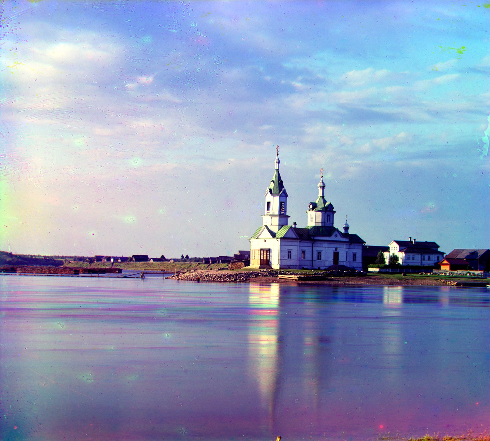
1. Single-Scale Alignment
I split each plate into three equal-height grayscale arrays. Blue remains fixed while I search every integer displacement (dy, dx) in a [-15, 15] window for green and red. Candidate channels are shifted with np.roll and scored using mean squared L2 error.
Coordinate Convention
Image arrays are indexed as (row, column), so dy acts on axis 0 and dx on axis 1. A positive dy moves a channel downward; a positive dx moves it to the right. Every reported displacement is the shift applied to green or red to align it with blue.
I compute the score only on the interior after removing 20% from each side. This prevents the plate borders and wrapped pixels introduced by np.roll from dominating the metric. The three low-resolution JPEGs align correctly with this direct search.
A ±15 pixel window is too small for full-resolution TIFF images, while a much larger exhaustive search is unnecessarily expensive. I therefore construct each pyramid myself by repeatedly downsampling by 0.5 with anti-aliasing until the smallest dimension would fall below 128 pixels.
Coarse-to-Fine Search
At the coarsest level, search ±15 pixels around zero.
Move to the next finer level and multiply the current shift by two.
Shift the moving image by this prediction and search a ±3 pixel correction.
Repeat until the original resolution is reached.
This converts one large two-dimensional search into a small global search followed by inexpensive local refinements. The baseline L2 pyramid processed all 14 provided images in 15.70 seconds on my machine.
Here s is the accumulated displacement and δ is the small correction found at the next finer level. For Church, the pyramid progresses through 200×227, 400×454, 800×908, 1601×1817, and 3202×3634 pixels. Anti-aliasing before every reduction prevents high-frequency structure from folding into misleading coarse patterns.
Scale factor0.5
Minimum dimension128 px
Coarsest search±15 px
Fine correction±3 px
Scoring crop20% per side
Computed Offsets
All offsets are reported as (dy, dx) and align the indicated channel to blue. “Gradient” is the improved CS280A version described in the next section.
Image
L2 Pyramid G
L2 Pyramid R
Gradient G
Gradient R
Cathedral
(5, 2)
(12, 3)
(5, 2)
(12, 3)
Church
(25, 4)
(58, -4)
(25, 4)
(58, -4)
Emir
(49, 24)
(61, 43)
(49, 24)
(107, 40)
Harvesters
(59, 17)
(123, 14)
(60, 18)
(123, 14)
Icon
(41, 17)
(89, 23)
(41, 17)
(90, 23)
Ilemselga
(40, 7)
(131, 11)
(40, 7)
(131, 11)
Melons
(81, 10)
(178, 14)
(80, 10)
(177, 14)
Monastery
(-3, 2)
(3, 2)
(-3, 2)
(3, 2)
Religious Painting
(29, 3)
(69, 7)
(30, 1)
(70, 6)
Self Portrait
(78, 29)
(176, 37)
(78, 29)
(175, 37)
Siren
(50, -5)
(97, -24)
(49, -6)
(96, -24)
Three Generations
(52, 14)
(111, 12)
(53, 13)
(111, 9)
Tobolsk
(3, 3)
(7, 3)
(3, 3)
(7, 3)
Wharf
(15, -7)
(82, -16)
(15, -6)
(82, -16)
Baseline Pyramid Results
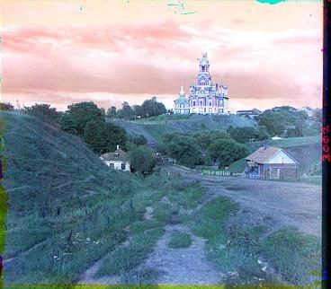
CathedralG (5, 2) · R (12, 3)
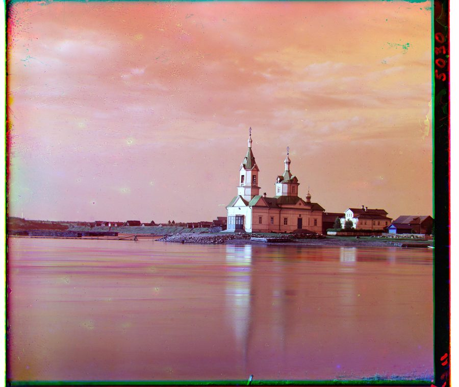
ChurchG (25, 4) · R (58, -4)
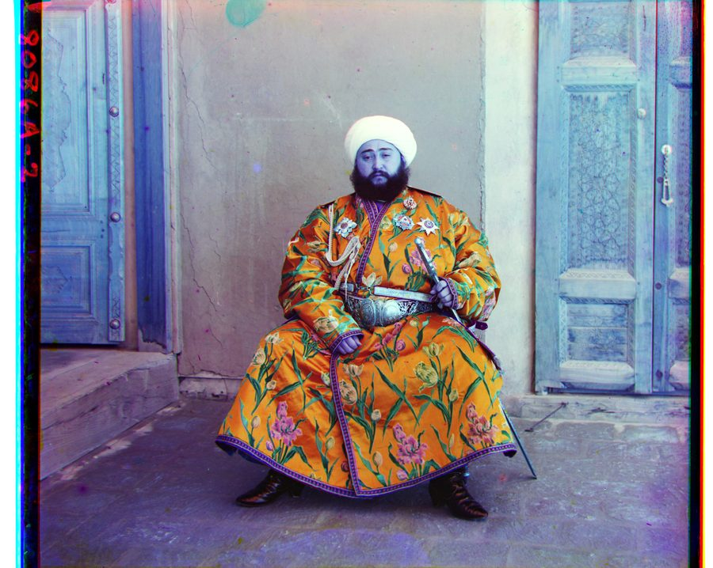
EmirRaw L2 fails on the red channel.
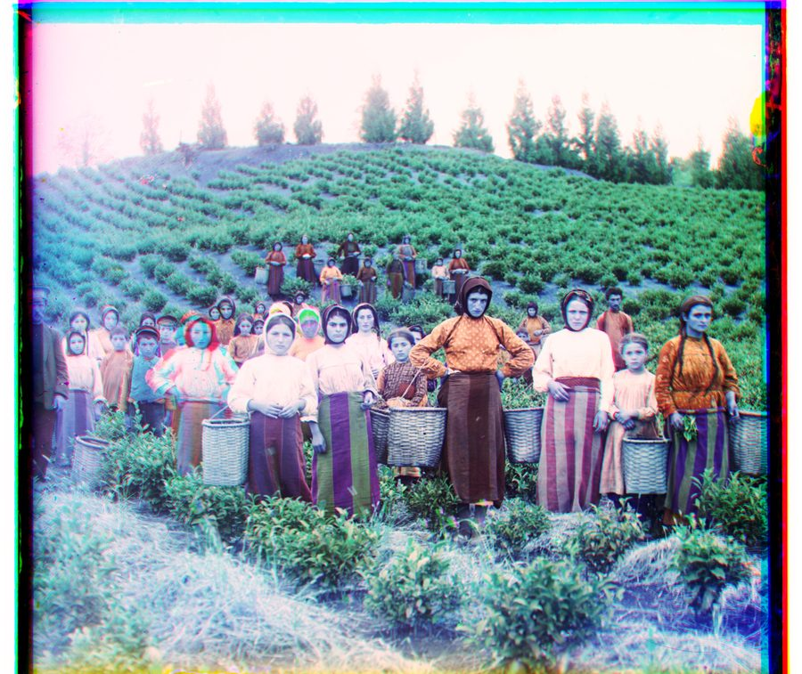
HarvestersG (59, 17) · R (123, 14)
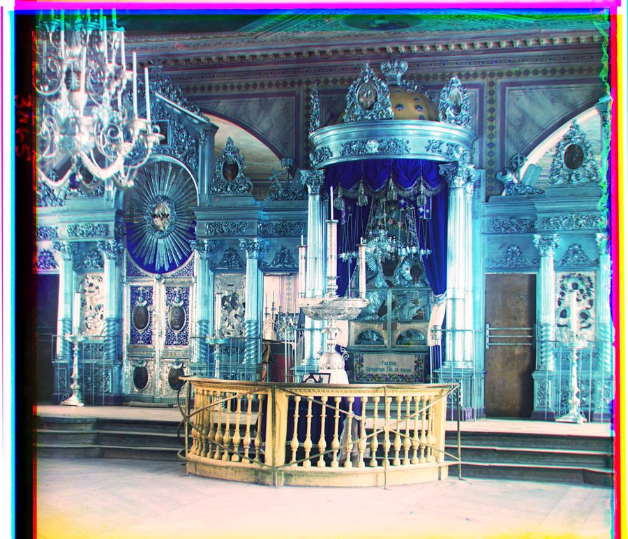
IconG (41, 17) · R (89, 23)
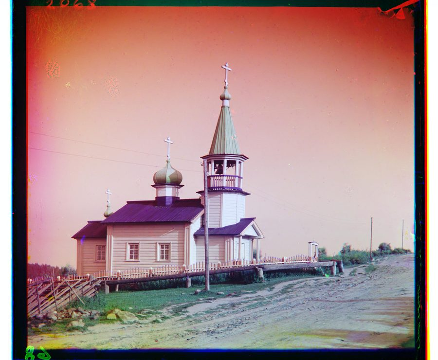
IlemselgaG (40, 7) · R (131, 11)
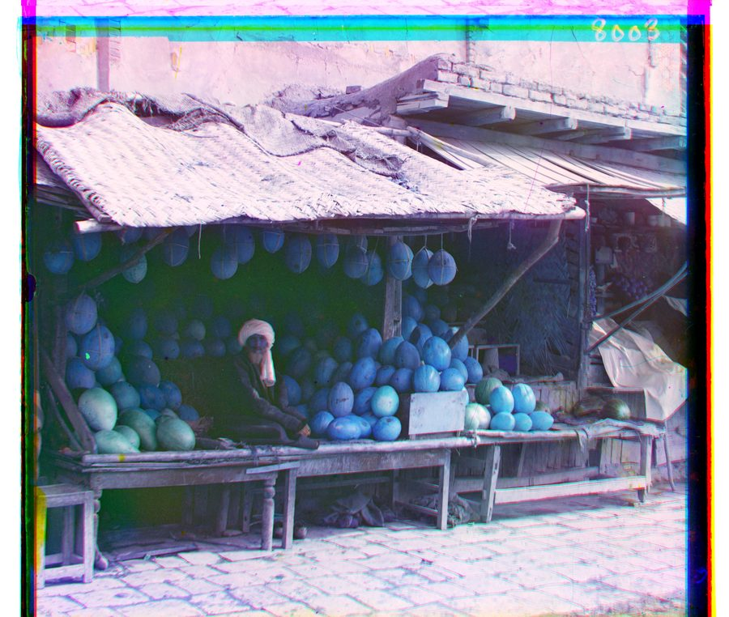
MelonsG (81, 10) · R (178, 14)
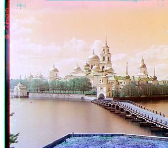
MonasteryG (-3, 2) · R (3, 2)
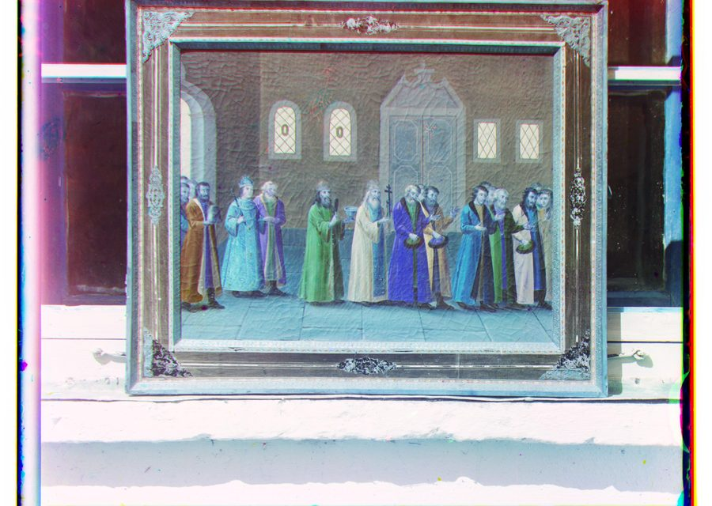
Religious PaintingG (29, 3) · R (69, 7)
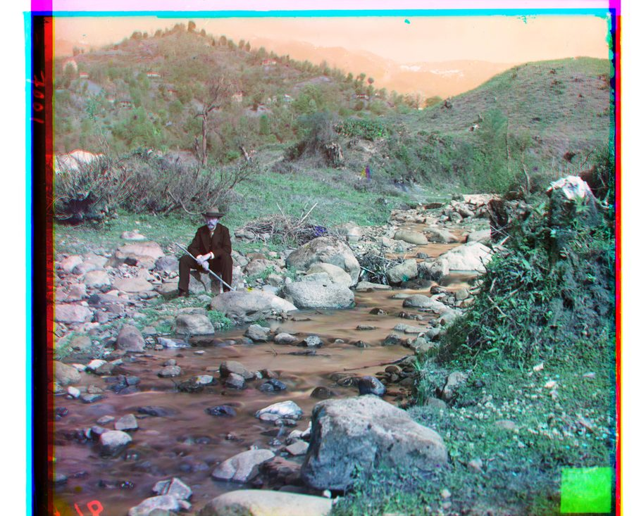
Self PortraitG (78, 29) · R (176, 37)
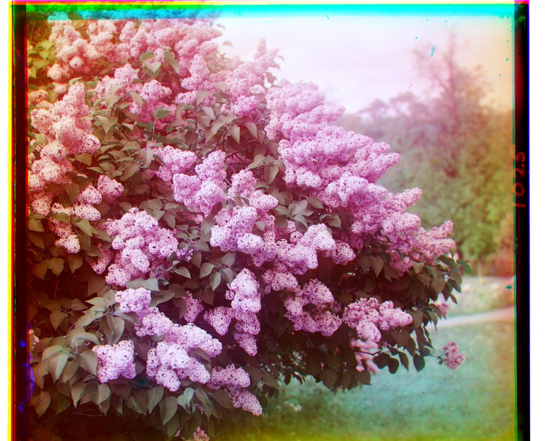
SirenG (50, -5) · R (97, -24)
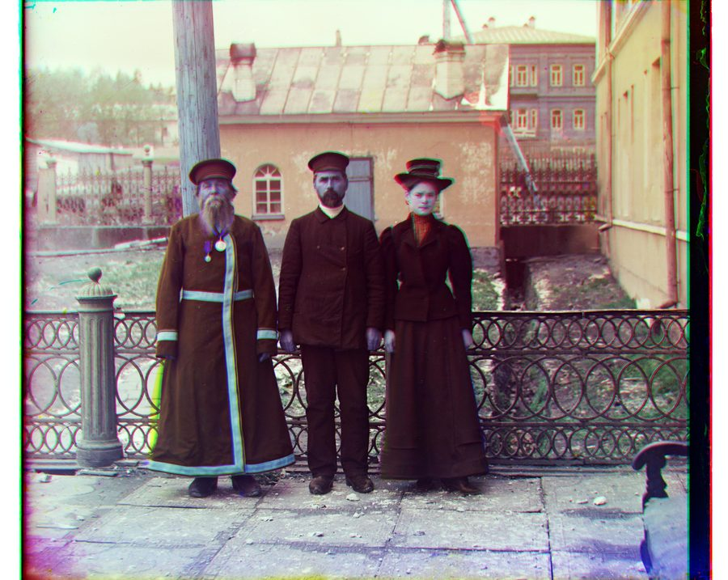
Three GenerationsG (52, 14) · R (111, 12)
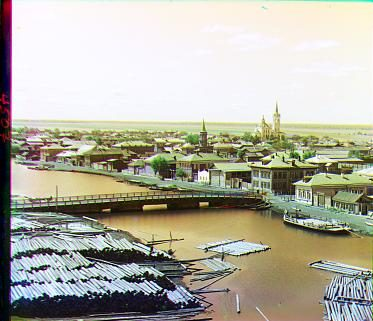
TobolskG (3, 3) · R (7, 3)
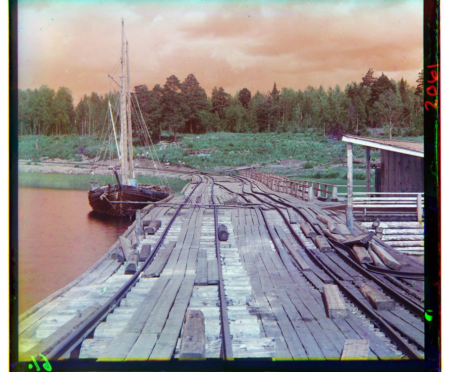
WharfG (15, -7) · R (82, -16)
3. Better Features: Gradient Alignment
Raw intensity assumes that corresponding pixels have similar values. That assumption breaks for objects whose reflectance differs strongly across the historical filters. In Emir, the blue robe is represented very differently in the red and blue exposures, so raw L2 chooses an incorrect red shift.
I instead compute the gradient magnitude of every exposure and run the same pyramid search on these structural features:
Edges describe where structures change rather than their absolute brightness. The shift is estimated from the gradient images, but the final RGB image is constructed from the original intensities. For Emir, the red-to-blue estimate changes from (61, 43) to (107, 40), visibly aligning the face, robe, and architectural edges.
Interpreting the Two Derivatives
The x derivative measures change while moving across columns, so it responds strongly to vertical edges. The y derivative measures change while moving across rows, so it responds strongly to horizontal edges. Their magnitude combines both directions without favoring a particular edge orientation.
Emir comparison: unaligned input, raw-pixel L2, and gradient-feature L2.
4. Automatic Restoration
After alignment, I apply four automatic corrections. Every method uses one fixed parameter set for all provided and custom images; there is no image-specific tuning.
Automatic Cropping
I compute horizontal and vertical RGB gradients and reduce them to one-dimensional row and column edge-strength profiles. A moving average with a window equal to 0.2% of the profile length suppresses isolated noise. The adaptive threshold is median + 3 × 1.4826 × MAD. I search only the outer 10% of each side and crop at the detected border edge, rather than removing a fixed margin.
Border Detection Procedure
Compute directional gradients independently in R, G, and B, then retain the strongest channel response at each location.
Average gradient magnitude across each row and column to form one-dimensional edge profiles.
Smooth each profile with a proportional moving-average window and calculate a robust MAD threshold.
Within the outer 10%, choose the last threshold crossing from the top or left and the first crossing from the bottom or right.
From Grayscale Gradients to RGB Gradients
My first version converted the aligned image to grayscale before calculating the gradients. This worked for black and white borders, but it could miss a colored border when two very different RGB colors happened to have similar grayscale intensity. In that case, the color changes strongly while the grayscale value changes only a little.
I therefore kept the same row-profile and column-profile method, but computed the gradients separately in red, green, and blue. At each pixel I use the largest absolute channel response. This preserves color-specific edges and makes cyan, magenta, or green plate borders easier to detect.
Batch testing also changed two global parameters. The first version searched the outer 20% and used a threshold scale of 4.0; this sometimes included strong scene structures and also missed thin borders. The final version searches only the outer 10% and uses a threshold scale of 3.0.
Church before and after data-driven border detection. Detected bounds: (94, 3061, 115, 3409).
Automatic Contrast
Direct min-max stretching is unstable because dust, scratches, and saturated plate pixels can become the extrema. I use the global 1st and 99th percentiles instead. Values below the lower percentile map to 0, values above the upper percentile map to 1, and the middle range is stretched linearly. This improves separation while limiting the influence of outliers.
The two percentiles are measured over the complete RGB image and the same endpoints are applied to every channel, so contrast changes without independently rebalancing color. Because many quantized pixels can share an endpoint, the measured clipped fraction can be slightly larger than exactly 1%.
Church contrast stretch using the measured range 0.183–0.930.
Automatic White Balance
Standard Gray World forces the global channel means toward a common value, but large colored objects can bias that estimate. This is especially visible when purple flowers dominate Siren. My final method uses Gray-Pixel white balance: it removes the darkest and brightest 10%, computes normalized chroma, and estimates the illuminant from the 20% least colorful remaining pixels. Approximately 16% of all pixels contribute to the estimate. The gains are normalized so the largest is 1, preventing newly saturated highlights.
This comparison matters in scenes that violate Gray World's global-average assumption. For example, standard Gray World clipped roughly 19% of blue values in Harvesters and 12% of red values in Tobolsk, while the normalized Gray-Pixel gains introduced no additional clipping in the tested comparison.
Gray-Pixel selection is more conservative than standard Gray World on Church and Siren.
Better Color Mapping
The historical filters are not guaranteed to match modern display primaries. Without a calibration target, I cannot recover a physically exact camera response. I use a fixed neutral-preserving linear transform that mildly increases the component away from the gray axis:
Each row of the matrix sums to one, so neutral grays remain neutral. I compared strengths from 1.0 to 1.3 and selected 1.1 as a conservative setting that improves separation without making skin, foliage, or flowers look excessively saturated.
Comparison of color strengths 1.0, 1.1, 1.2, and 1.3 on representative scenes.
Putting the Steps Together
After testing each method separately, I put them into one function. For each plate, I first use gradient features to align the three exposures. I then crop the borders before calculating any color statistics, apply Gray-Pixel white balance, use the color mapping matrix, and finish with percentile contrast.
I use this order because the dark and colored plate borders should not affect white balance. Contrast is kept until the end so it stretches the range of the image after the color corrections are complete. Using the same function on all 14 provided images took 34.28 seconds in total, with an average of 2.45 seconds per image.
Fixed Parameters
These values are fixed globally rather than tuned per photograph, making the experiment reproducible and providing a direct test of generalization.
To test generalization, I downloaded three full-resolution 16-bit TIFF glass plates from the Library of Congress Prokudin-Gorskii collection. I applied the same gradient-feature L2 pyramid and the exact same restoration parameters used for the provided dataset. The three results align correctly despite differences in subject matter, exposure, and plate dimensions.
Architectural Ruin · LoC 00100-00110a
The unaligned reconstruction has clear color ghosts around the dome and doorway. After alignment, the large vertical red displacement is corrected and the main architectural edges overlap cleanly.
G shift: (26, 10) · R shift: (70, 11) · Crop bounds: (211, 3154, 158, 3507) · Runtime: 2.88 s
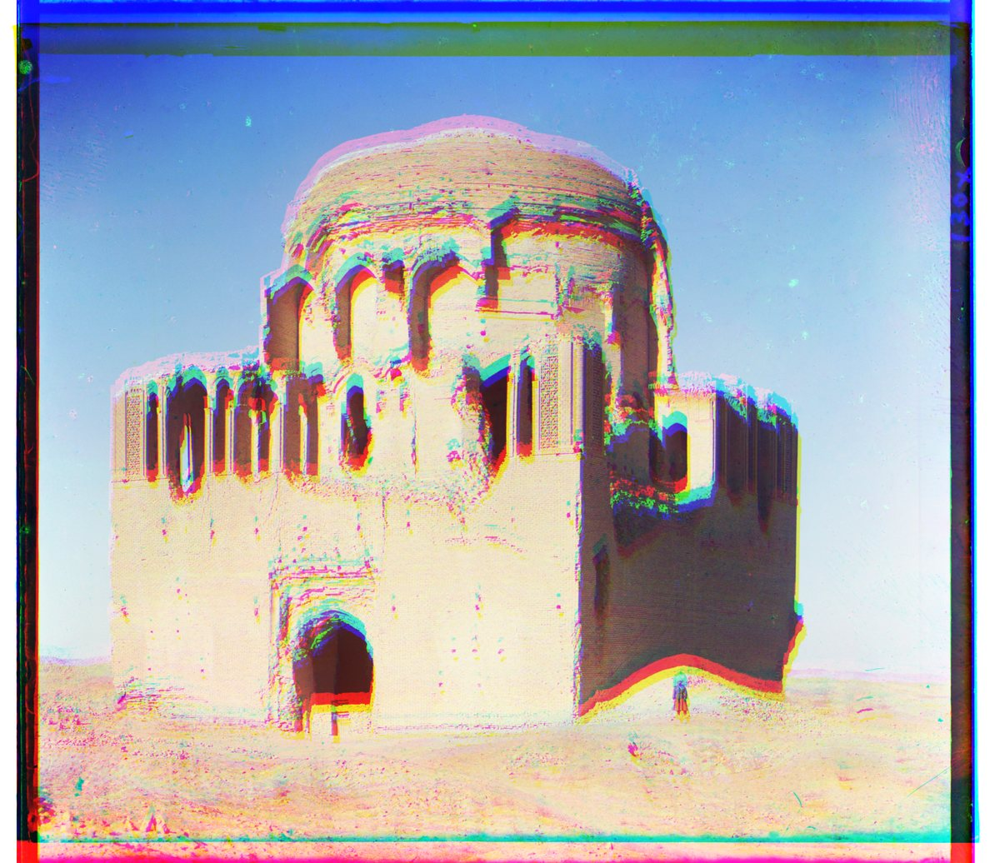
BeforeChannels stacked without alignment or restoration.
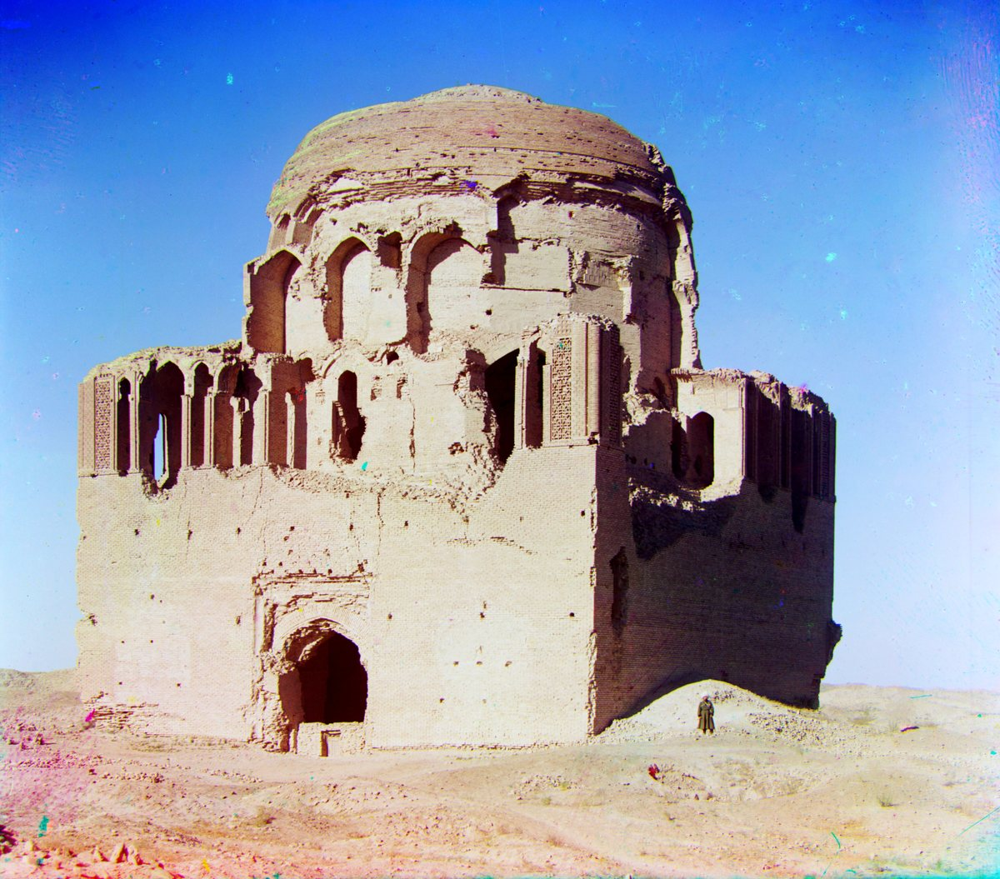
AfterFinal result from the fixed processing pipeline.
Woman on a Terrace · LoC 00100-00194a
This image contains many thin and repeated structures in the railing. The gradient representation still finds a stable shift, and the final image aligns the face, chair, tablecloth, and railing without changing the parameters.
G shift: (38, 22) · R shift: (77, 36) · Crop bounds: (235, 3206, 186, 3581) · Runtime: 2.96 s
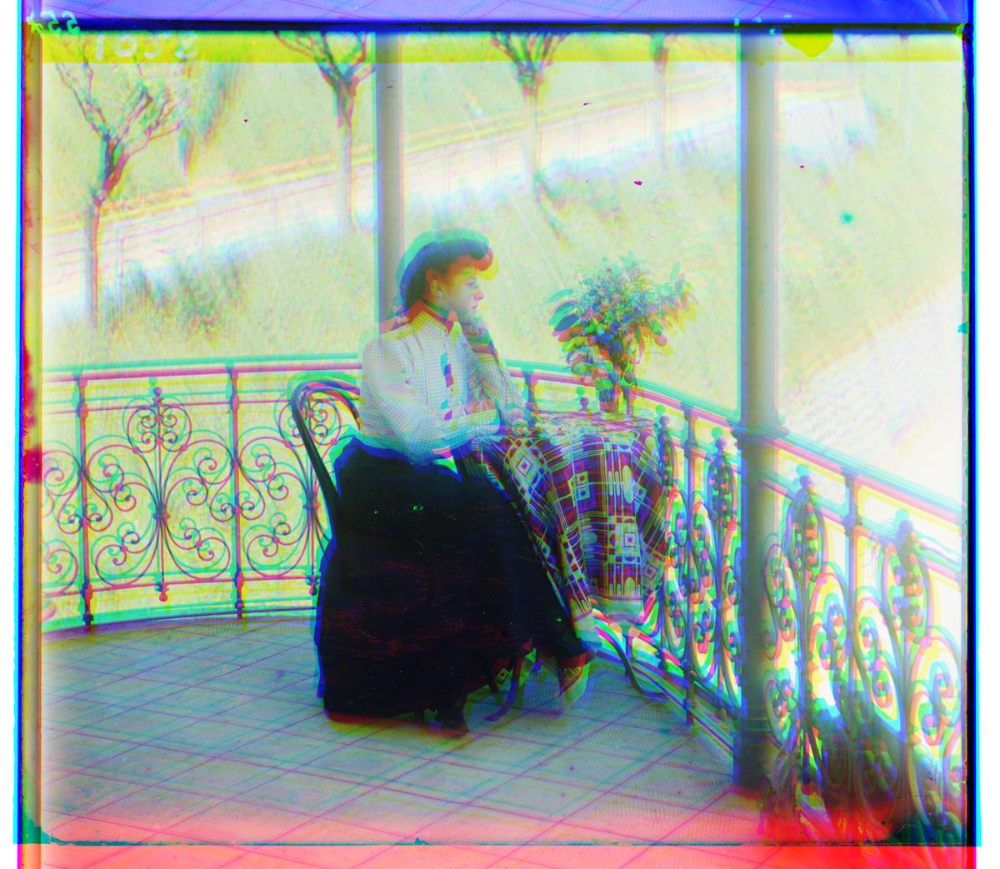
BeforeChannels stacked without alignment or restoration.
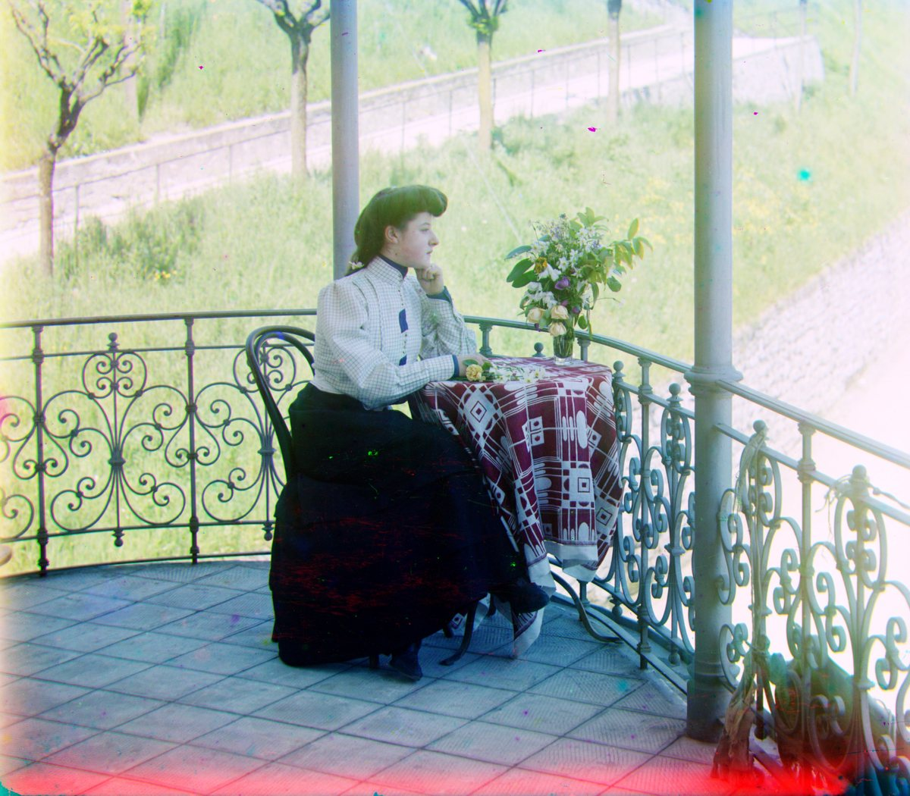
AfterFinal result from the fixed processing pipeline.
Italian Townscape · LoC 00200-00218a
Unlike the first two examples, both horizontal offsets are negative. The same search handles that direction automatically and brings the tower, balconies, and building outlines into agreement.
G shift: (32, -16) · R shift: (78, -25) · Crop bounds: (100, 3238, 205, 3606) · Runtime: 3.19 s
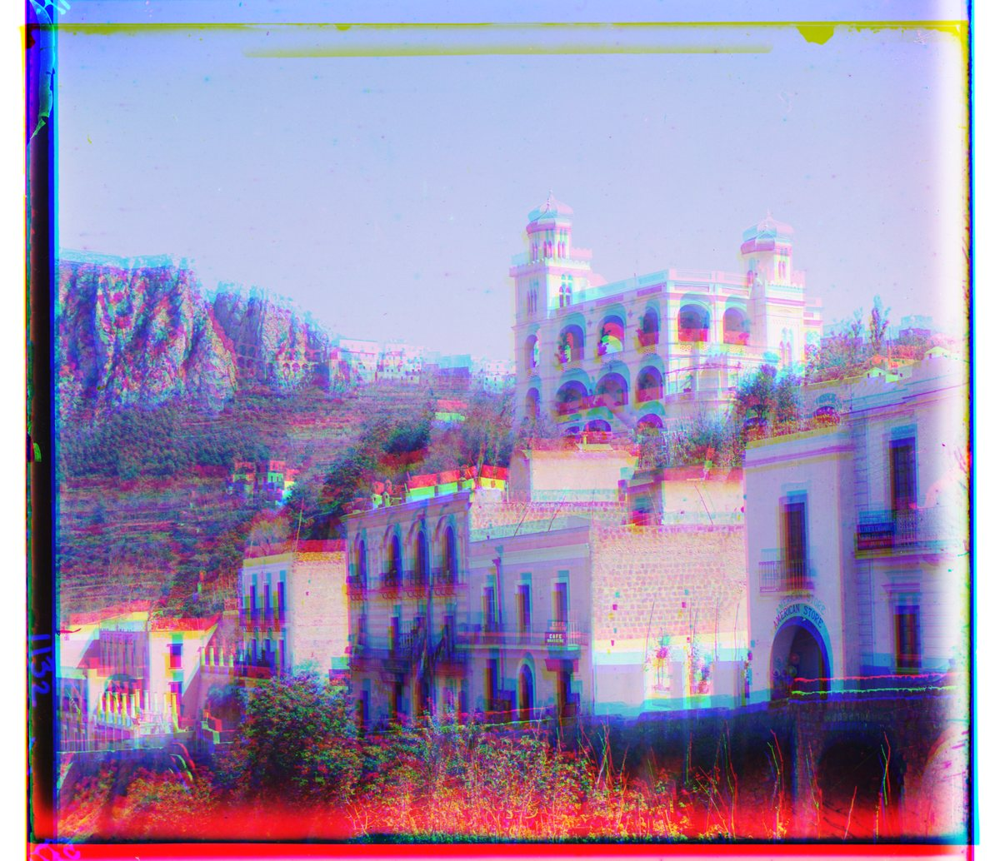
BeforeChannels stacked without alignment or restoration.
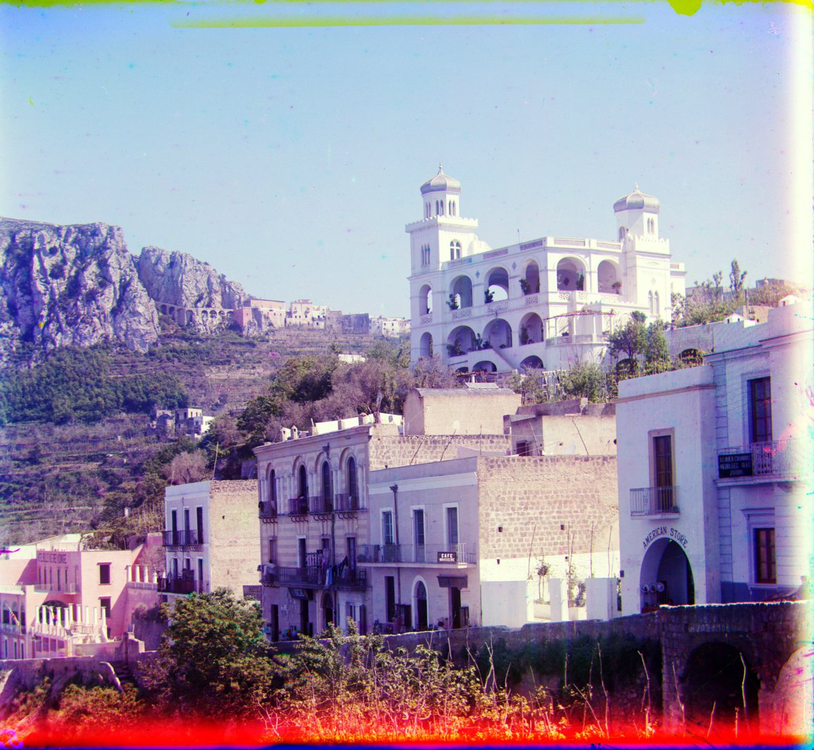
AfterFinal result from the fixed processing pipeline.
Discussion
What I Found
The image pyramid solved the speed problem for the large TIFF files, but it did not solve every alignment problem by itself. Emir was the clearest example: increasing the search range still gave a wrong red-channel match because the robe has very different intensities across the filters. Changing the input to gradient magnitude fixed that result without changing the pyramid search.
The automatic corrections also needed a few revisions. In cropping, a wide search region could confuse image content with a plate border, so I reduced the search to the outer 10%. For white balance, the global Gray World result changed scenes with one dominant color too strongly, so I estimated the gains from low-chroma pixels instead.
Limitations
My alignment model only searches for x and y translation. It cannot correct rotation, scale change, or movement between the three exposures. The cropper is intentionally conservative, so a thin colored edge can remain when removing it would risk cutting real image content. The color mapping is also a visual adjustment rather than a physical calibration because these plates do not contain a known color chart.
Takeaway
The most useful change was not a larger search window. It was using a feature that describes the shared structure of the three exposures. The same idea helped in the later parts: I used edge profiles for borders, robust percentiles for contrast, and low-chroma pixels for white balance instead of relying on a single extreme value.